Hướng dẫn sử dụng SalesDataHow to use SalesData
Ghi nhận mỗi lần giao thùng Super Horse, quản lý nhập – xuất – tồn kho tại DL1 của bạn, xem doanh số, và báo lỗi khi nhập sai. Record every drop-off of Super Horse boxes, look after stock in and out at your DL1, see your own sales, and report a mistake if you entered something wrong.
Vì sao cần ghi nhận?Why we record drop-offs
Mỗi lần giao hàng được ghi nhận chính xác giúp chúng ta biết khách hàng của mình ở đâu. Chúng ta dùng dữ liệu đó để lập kế hoạch tốt hơn, hỗ trợ khách hàng tốt hơn, và cùng nhau phát triển công ty của chúng ta — Super Horse Energy Drink.
Every drop-off you record accurately shows us where our customers are. We use that data to plan smarter, support our customers better, and grow our company, Super Horse Energy Drink, together.
| Dữ liệu dùng đểWe use the data to | |
|---|---|
| Tìm thị trườngFind our markets | Biết khu vực nào bán chạy và nơi cần mở rộng.See which areas sell most and where to expand. |
| Kế hoạch hàng & giao hàngPlan stock & delivery | Đúng số lượng, đúng nơi, đúng lúc.The right amount, in the right place, at the right time. |
| Hỗ trợ nhà phân phốiSupport distributors | Hiểu cách hàng đi từ đại lý cấp 1 và giúp họ bán nhiều hơn.Understand how product moves on from DL1 and help them sell more. |
| Marketing đúng chỗTarget marketing | Quảng bá ở nơi hiệu quả nhất.Promote where it has the most impact. |
1Bắt đầuGetting started
- Mở đường link ứng dụngOpen the app link Quản lý sẽ gửi cho bạn đường link, tên đăng nhập và mã PIN 4 số. Giữ bí mật mã PIN. Your manager sends you the link, your username and a 4-digit PIN. Keep your PIN private.
- Thêm vào màn hình chínhAdd it to your home screen iPhone (Safari): bấm Chia sẻ → Thêm vào MH chính. Android (Chrome): bấm ⋮ → Thêm vào màn hình chính. Lần sau chỉ cần chạm vào biểu tượng. iPhone (Safari): tap Share → Add to Home Screen. Android (Chrome): tap ⋮ → Add to Home screen. Next time, just tap the icon.
- Cho phép Vị tríAllow Location Khi điện thoại hỏi, chọn Cho phép. Ứng dụng cần vị trí để ghi nơi giao hàng. When the phone asks, choose Allow. The app needs your location to record where the boxes were delivered.
- Đăng nhập mỗi sángLog in each morning Nhập tên đăng nhập và mã PIN, bấm Đăng nhập. Phiên đăng nhập hết hạn lúc nửa đêm. Đăng nhập cần có mạng — hãy đăng nhập trước khi đi. Enter your username and PIN and tap Log in. Your login ends at midnight. Logging in needs signal, so do it before you head out.
- Đọc lời chào và bấm OKRead the welcome message and tap OK
| TabTab | Dùng đểUsed for |
|---|---|
| Ghi nhậnRecord | Ghi mỗi lượt giao hàng sau DL1 (mục 2).Each drop-off below DL1 (section 2). |
| Kho DL1DL1 stock | Nhận hàng, bán tại DL1, trả hàng, hàng hỏng, khuyến mãi, kiểm kê (mục 3).Deliveries in, DL1 sales, returns, damaged stock, promotions, stocktakes (section 3). |
| Doanh sốMy sales | Doanh số và các lượt giao của bạn; báo lỗi (mục 4–5).Your sales and drop-offs; report a mistake (sections 4–5). |
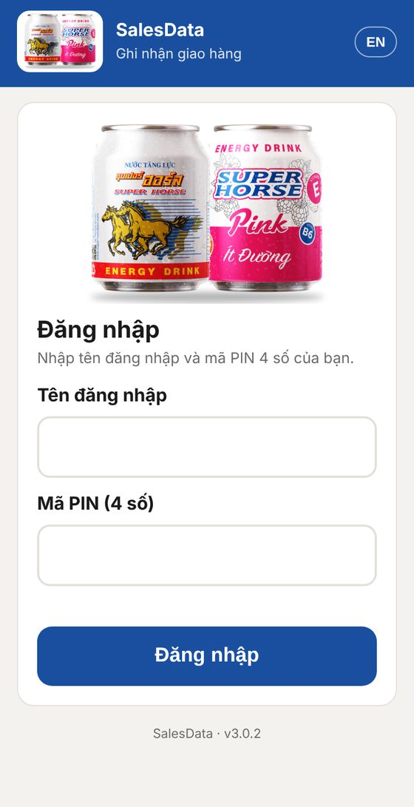

Nút EN / VI ở góc trên đổi ngôn ngữ. Nút ? mở hướng dẫn này.The EN / VI button at the top switches language. The ? button opens this guide.
2Ghi nhận một lượt giao hàngRecord a drop-off
Làm ngay tại điểm giao hàng — mỗi điểm giao là một lần ghi nhận.Do it at the drop-off point, one entry for each place you deliver to.
- Chờ GPS chuyển xanhWait for green GPS
Màu sắc cho biết độ chính xác của vị trí, không phải tín hiệu điện thoại.
The colour shows how accurate your location is, not your phone signal.
XanhGreen ±20 m Gửi được ngay.You can submit now. CamOrange ±21–50 m Gửi được sau 20 giây chờ (hoặc chờ chuyển xanh).You can submit after waiting 20 seconds (or wait for green). ĐỏRed >50 m Chưa gửi được. Ra chỗ thoáng.Cannot submit yet. Move to an open spot. - Chọn sản phẩm (và DL1 nếu được hỏi)Choose the product (and DL1 if asked) Mặc định là Super Horse Energy Drink; chạm Super Horse Pink nếu giao Pink. Nếu bạn phụ trách nhiều DL1, chọn DL1 mà hàng được lấy ra — số thùng sẽ được trừ khỏi kho DL1 đó. The default is Super Horse Energy Drink; tap Super Horse Pink for Pink. If you cover more than one DL1, choose the DL1 the boxes came from; they come off that DL1's stock.
- Nhập số thùngEnter the number of boxes Từ 1 đến 2.400 thùng. Trên 500 thùng, ứng dụng hỏi lại để tránh gõ nhầm. From 1 to 2,400 boxes. Above 500, the app asks you to double-check to catch typos.
- Bấm Xác nhậnTap Confirm Xác nhận sáng lên khi GPS và số thùng hợp lệ.Confirm turns on when the GPS and box count are OK.
- Kiểm tra lại rồi bấm GửiCheck, then tap Submit Màn hình Kiểm tra lại hiện số thùng, thời gian và vị trí. Bấm Gửi, hoặc Quay lại sửa nếu cần sửa. The Check again screen shows boxes, time and location. Tap Submit, or Go back and edit to change it.
- Chờ màn hình "Đang gửi…"Wait for "Sending…" Màn hình xanh hiện ngay khi bạn bấm Gửi. Không cần bấm lại. A blue screen appears as soon as you tap Submit. No need to tap again.
- Xem kết quảSee the result ✓ Gửi thành công — đã lưu. ⏳ Đã lưu trên máy — chưa có mạng, sẽ tự gửi sau. Bấm Ghi nhận mới cho điểm giao tiếp theo. ✓ Sent successfully: saved. ⏳ Saved on phone: no signal, it will send automatically later. Tap New entry for your next drop-off.
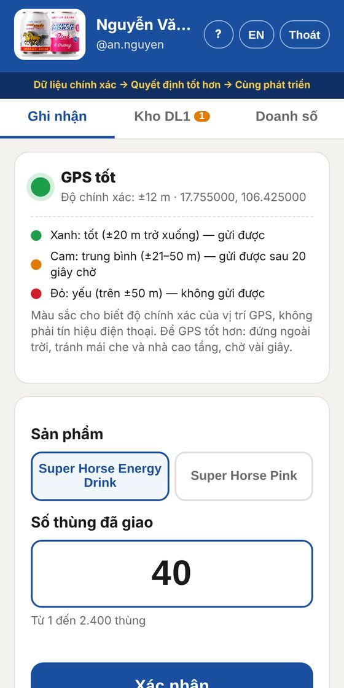
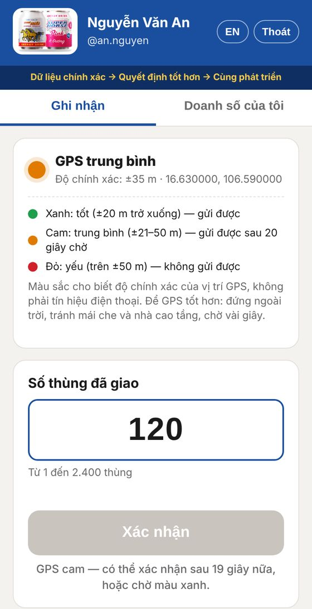
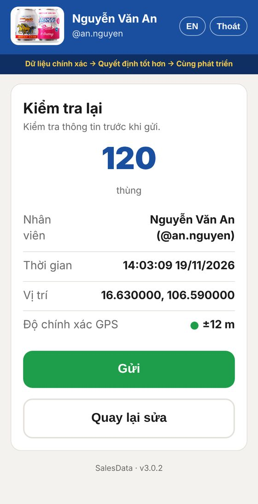

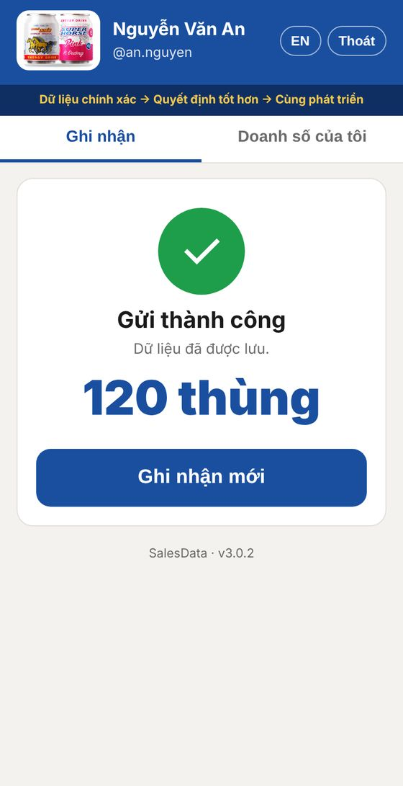
Để GPS tốt hơn: đứng ngoài trời, tránh mái che và nhà cao tầng, chờ vài giây.For better GPS: stand outdoors, away from roofs and tall buildings, and wait a few seconds.
3Kho DL1: nhập – xuất – tồnDL1 stock: in, out and balance
Bạn chịu trách nhiệm ghi mọi thùng vào và ra tại kho DL1 của mình. Tồn kho được tính tự động từ các lần ghi này — không ai nhập tay số tồn. Mọi lần ghi đều có thời gian và GPS. You are responsible for logging every box in and out of your DL1 warehouse. The stock balance is calculated automatically from these entries; nobody types it in. Every entry has a time and GPS.
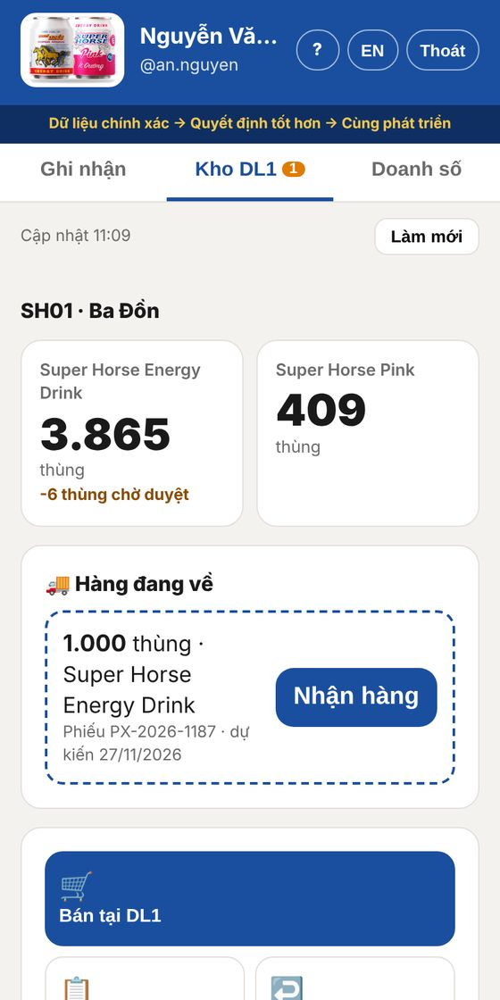
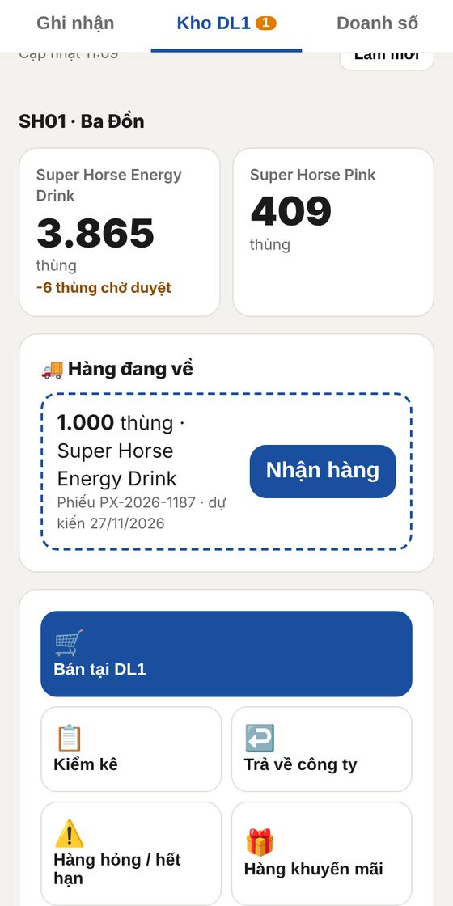
| Phần trên màn hìnhOn screen | |
|---|---|
| Tồn khoStock tiles | Số thùng hiện có cho từng sản phẩm. "Chờ duyệt" = thùng hỏng/khuyến mãi/chênh lệch kiểm kê đang chờ quản lý. Số đỏ = tồn âm → hãy kiểm kê.Boxes on hand per product. "Pending" = damaged, promotion or count differences waiting for the manager. Red = below zero, so do a stocktake. |
| Hàng đang vềDeliveries on the way | Phiếu xuất HQ đã gửi tới DL1 của bạn, chờ bạn xác nhận.Dispatches HQ has sent to your DL1, waiting for you to confirm. |
| Nhập xuất gần đâyRecent movements | Mọi lần ghi của cả nhóm tại DL1 này — cả nhóm thấy cùng một số tồn.Every entry by your whole DL1 team, so everyone sees the same balance. |
Nếu bạn phụ trách nhiều DL1, chọn DL1 ở ô trên cùng. Nếu không thấy DL1 nào, bạn chưa được phân công — liên hệ admin.If you cover several DL1s, pick one in the box at the top. If no DL1 shows, you haven't been assigned yet; contact the admin.
Các loại nhập / xuấtTypes of movement
| NútButton | Khi nàoWhen | Quản lý duyệt?Approval? |
|---|---|---|
| 🚚 Nhận hàngReceive | Xe hàng HQ tới kho DL1An HQ delivery arrives at the warehouse | KhôngNo |
| 🛒 Bán tại DL1Sold at DL1 | Mỗi lần DL1 bán hàng (khách lẻ, xe của DL1…)Each time the DL1 sells (walk-ins, DL1 truck…) | KhôngNo |
| ↩️ Trả về công tyReturn to HQ | Thùng gửi trả về công ty (cần lý do)Boxes sent back to head office (reason needed) | KhôngNo |
| ⚠️ Hàng hỏng / hết hạnDamaged / expired | Thùng không bán được (cần lý do)Boxes that can't be sold (reason needed) | ✅ CóYes |
| 🎁 Hàng khuyến mãiFree promotion | Thùng tặng cho chương trình (cần lý do)Boxes given away for a promotion (reason needed) | ✅ CóYes |
| 📦 Giao sau DL1Drop-off | Ghi ở tab Ghi nhận (mục 2) — tự động trừ khoLogged in the Record tab (section 2); comes off stock automatically | KhôngNo |
Mục cần duyệt chỉ trừ vào kho sau khi quản lý duyệt. Nếu bị từ chối, lý do hiện ngay trong danh sách.Items needing approval only come off stock after the manager approves. If rejected, the reason shows in the list.
Nhận hàng từ công tyReceiving a delivery from HQ
- Đếm số thùng thực nhậnCount what actually arrived
- Bấm "Nhận hàng" trên phiếu đang vềTap "Receive" on the deliverySố thùng của phiếu đã được điền sẵn.The delivery note's quantity is already filled in.
- Sửa số nếu khácChange it if differentNếu nhận thiếu/dư hoặc hàng móp, nhập số thực nhận và bắt buộc ghi chú lý do.If short, over or damaged, enter what you actually received; a note is required.
- Bấm GửiTap SubmitHàng được cộng vào kho ngay; HQ thấy trạng thái "Đã nhận" hoặc "Nhận thiếu".The boxes are added to stock at once; HQ sees "Received" or "Received short".
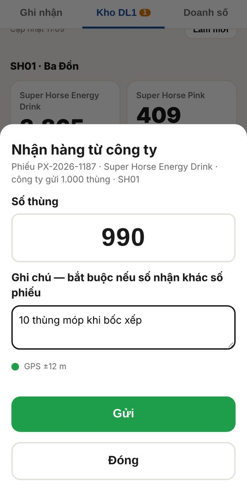
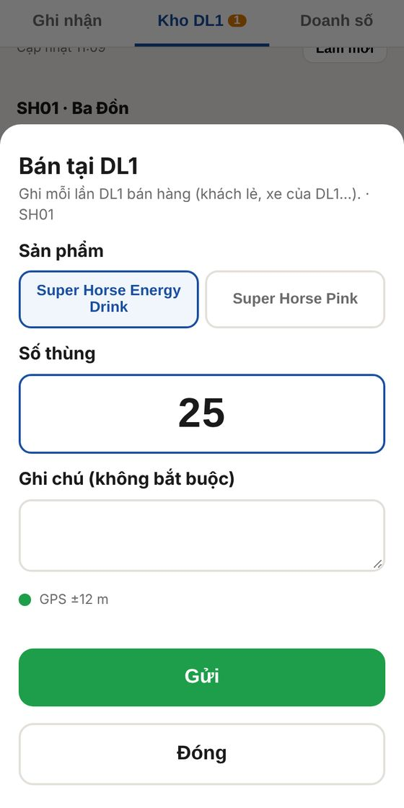
Bán tại DL1: ghi ngay mỗi lần bán — không cần ghi chép riêng. Chỉ mất khoảng 5 giây: bấm nút, nhập số thùng, Gửi.Sold at DL1: log it each time you sell; no separate notes needed. About 5 seconds: tap, enter boxes, Submit.
Kiểm kê (đếm kho)Stocktake (counting the warehouse)
Kiểm kê được làm bất kỳ ngày nào, và bắt buộc cuối mỗi tháng. Đây là kiểm kê "mù": bạn nhập số đếm được trước, rồi ứng dụng mới cho thấy số của hệ thống. You can do a stocktake any day, and it is required at the end of every month. It's a "blind" count: you enter what you counted first, and only then does the app show the system figure.
- Đếm toàn bộ thùng trong khoCount every box in the warehouseĐếm riêng Super Horse và Super Horse Pink (nhập 0 nếu không có).Count Super Horse and Super Horse Pink separately (enter 0 if none).
- Bấm Kiểm kê, nhập số đếm, GửiTap Stocktake, enter your counts, SendCần có mạng.Needs signal.
- Xem kết quảSee the result✓ Khớp: xong. Có chênh lệch: yêu cầu điều chỉnh được gửi quản lý. Hãy ghi lý do, hoặc bấm Đếm lại nếu bạn nghĩ đã đếm sai.✓ Matches: done. Difference: an adjustment goes to the manager. Give a reason, or tap Count again if you think you miscounted.
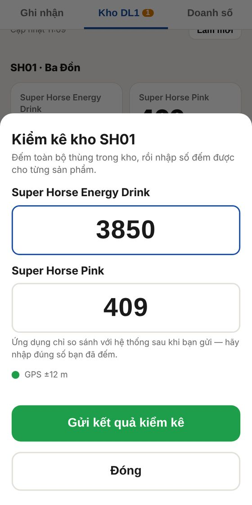
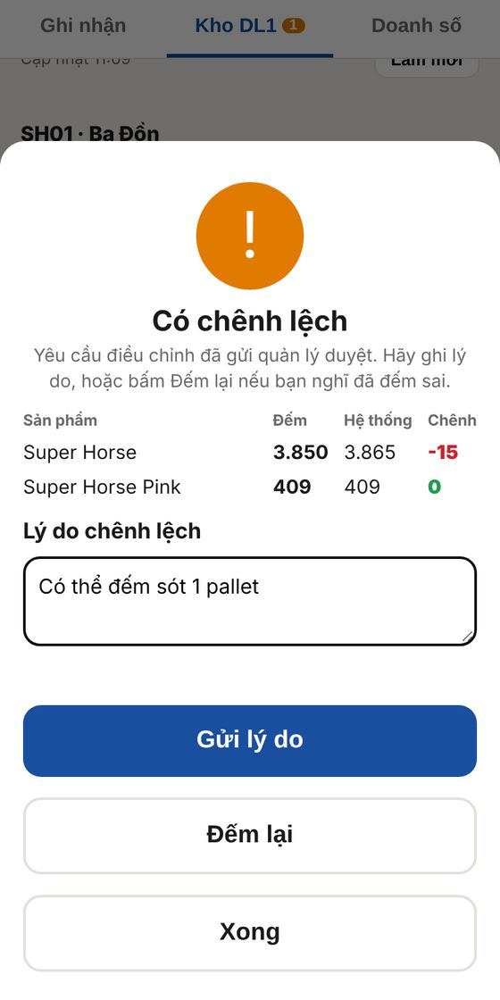
Kiểm kê cuối tháng (bắt buộc)Month-end stocktake (required)
Từ ngày 28, một khung màu cam hiện trên tab Kho DL1. Hoàn thành trước hết ngày 5 tháng sau. Nếu bạn đếm vào ngày 1–5, số liệu vẫn được tính cho ngày cuối tháng — thời gian và GPS thực tế vẫn được ghi lại. From the 28th, an orange box appears on the DL1 stock tab. Finish it by the end of the 5th of the next month. If you count on the 1st–5th, it still counts for the last day of the month, and the real time and GPS are still recorded.
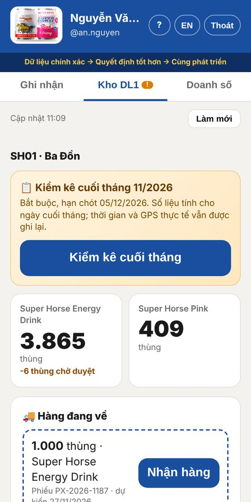
4Xem doanh số của tôiSee my sales
Chạm tab Doanh số. Đây là màn hình chỉ xem — bạn không thể sửa dữ liệu ở đây. Tap the My sales tab. This screen is view only; you can't change data here.
| MụcItem | Ý nghĩaWhat it shows |
|---|---|
| Hôm nayToday | Tổng số thùng và số lượt giao hôm nay.Total boxes and drop-offs today. |
| Tháng nàyThis month | Tổng tháng, và so với cùng kỳ tháng trước (▲ tăng / ▼ giảm).Month total, compared with the same point last month (▲ up / ▼ down). |
| Số thùng mỗi ngàyBoxes per day | Biểu đồ cột của tháng này. Cột vàng = hôm nay.Bar chart for this month. Gold bar = today. |
| Ngày làm việc · TB / lượt · Ngày tốt nhấtActive days · Avg / drop · Best day | Số ngày có giao hàng, trung bình thùng mỗi lượt, ngày nhiều nhất.Days with deliveries, average boxes per drop-off, and your biggest day. |
| Các lượt giao của tôiMy drop-offs | Từng lượt giao theo ngày, mới nhất trước, kèm trạng thái.Each drop-off by day, newest first, with its status. |
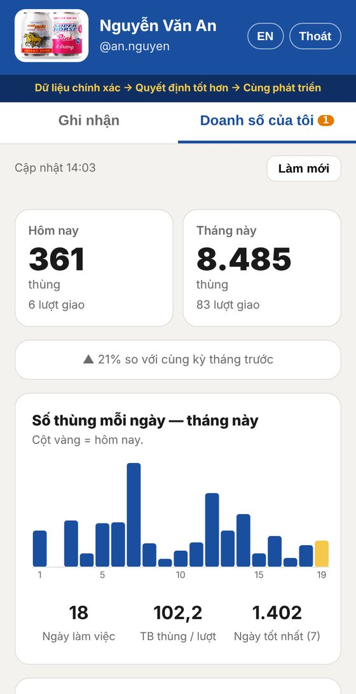

Trạng tháiStatuses
| Chưa gửi (chờ mạng)Not sent yet | Đang lưu trên điện thoại, sẽ tự gửi khi có mạng.Saved on your phone; sends automatically when you have signal. |
| ✏️ Chờ duyệtPending review | Bạn đã báo lỗi, quản lý dữ liệu chưa xử lý.You reported a mistake; a data manager hasn't reviewed it yet. |
| Đã sửaAmended | Đã duyệt. Hiện số gốc → số mới.Approved. Shows original → new number. |
| Đã hủyVoided | Mục bị trùng/sai đã được hủy — không tính vào doanh số.Duplicate or wrong entry was voided and no longer counts. |
| Bị từ chốiRejected | Quản lý không đồng ý. Lý do hiện ngay bên cạnh.The manager didn't agree. The reason is shown next to it. |
Số trên tab (ví dụ 1) là số yêu cầu đang chờ duyệt. Bấm Làm mới để cập nhật. The number on the tab (e.g. 1) is how many of your requests are waiting. Tap Refresh to update.
5Báo lỗi khi nhập saiReport a mistake
Bạn không thể tự sửa dữ liệu. Nếu nhập sai, hãy báo lỗi để quản lý dữ liệu kiểm tra. Đừng gửi thêm một lượt mới để "sửa" — sẽ thành trùng. You can't edit data yourself. If you entered something wrong, report it so a data manager can check. Don't submit a second entry to "fix" it: that creates a duplicate.
- Mở tab Doanh sốOpen My salesTìm lượt giao bị sai.Find the wrong entry.
- Bấm ⚠️ Báo lỗiTap ⚠️ Report
- Chọn loại lỗiChoose what's wrong Sai số thùng (nhập số đúng) · Mục bị trùng (nhập 2 lần) · Không phải lượt giao của tôi. Thêm ghi chú nếu cần. Wrong number of boxes (type the correct number) · Duplicate (entered twice) · Not my drop-off. Add a note if useful.
- Bấm Gửi yêu cầuTap Send requestCần có mạng. Trạng thái chuyển thành ✏️ Chờ duyệt.Needs signal. The status changes to ✏️ Pending review.
- Chờ kết quảWait for the resultMở lại tab để xem: Đã sửa, Đã hủy, hoặc Bị từ chối (kèm lý do).Check the tab again later: Amended, Voided, or Rejected (with a reason).
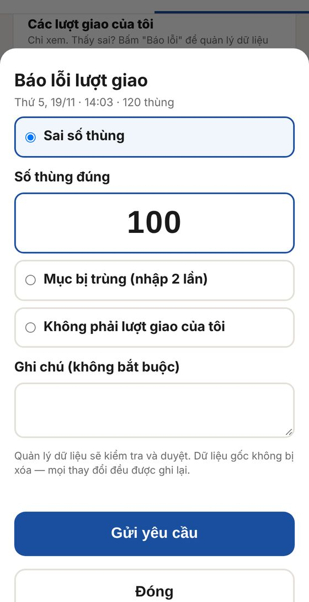
| Quy tắcRule | |
|---|---|
| Thời hạnTime limit | Báo lỗi được cho các lượt trong tháng này. Lượt của tháng trước: đến hết ngày 3 tháng này.You can report entries from this month. Last month's entries: until the 3rd of this month. |
| Mỗi lần một yêu cầuOne at a time | Một lượt giao chỉ có một yêu cầu đang chờ.Each entry can only have one request waiting. |
| Đổi ý?Changed your mind? | Bấm Hủy yêu cầu khi yêu cầu còn đang chờ.Tap Cancel request while it's still pending. |
| Mục kho khácOther stock entries | Báo lỗi chỉ dùng cho lượt giao. Nếu ghi sai "Bán tại DL1", nhận hàng hoặc trả hàng: làm Kiểm kê — chênh lệch sẽ được quản lý duyệt và số tồn được sửa đúng.Report is for drop-offs only. If you logged a wrong DL1 sale, receipt or return, do a Stocktake; the manager approves the difference and the balance is corrected. |
| Dữ liệu gốcThe original | Không bao giờ bị xóa. Mọi thay đổi đều được ghi lại.Is never deleted. Every change is logged. |